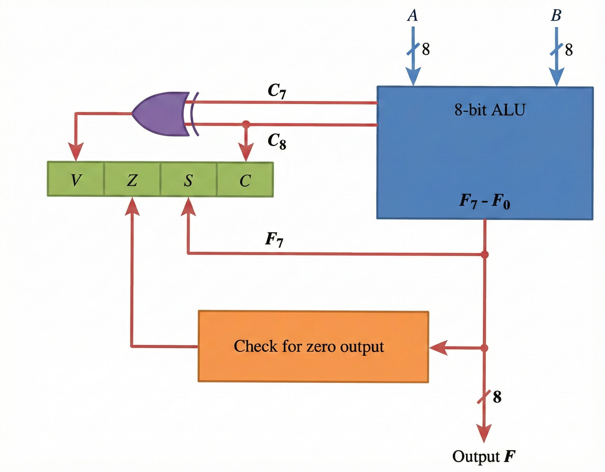

Fundamentals of Program Control
Program control instructions are unique because their execution can change the Program Counter (PC), thereby altering the flow of control. This capability enables branching to different program segments and provides powerful control over execution paths.
Common Program Control Instructions
| Instruction | Mnemonic |
|---|---|
| Branch | BR |
| Jump | JMP |
| Skip | SKP |
| Call | CALL |
| Return | RET |
| Compare (by subtraction) | CMP |
| Test (by ANDing) | TST |
Status Bits & Conditional Branching
Conditional program flow relies on checking specific conditions stored in a Status Register. The ALU output sets or resets condition flags based on operation results.

V - Overflow
Indicates arithmetic overflow occurred
Z - Zero
Result of operation is zero
S - Sign
Indicates sign of the result
C - Carry
Carry out from MSB occurred
Conditional Branch Instructions
| Mnemonic | Branch Condition | Tested Condition |
|---|---|---|
| BZ | Branch if zero | Z = 1 |
| BNZ | Branch if not zero | Z = 0 |
| BC | Branch if carry | C = 1 |
| BNC | Branch if no carry | C = 0 |
| BP | Branch if plus | S = 0 |
| BM | Branch if minus | S = 1 |
| BV | Branch if overflow | V = 1 |
| BNV | Branch if no overflow | V = 0 |
| BHI | Branch if higher | A > B |
| BHE | Branch if higher or equal | A ≥ B |
| BLO | Branch if lower | A < B |
| BLOE | Branch if lower or equal | A ≤ B |
| BE | Branch if equal | A = B |
| BNE | Branch if not equal | A ≠ B |
| BGT | Branch if greater than | A > B |
| BGE | Branch if greater or equal | A ≥ B |
| BLT | Branch if less than | A < B |
| BLE | Branch if less or equal | A ≤ B |
| BE | Branch if equal | A = B |
| BNE | Branch if not equal | A ≠ B |
Subroutine Call & Return
Subroutines enable modular programming, allowing code segments to be executed multiple times from different program points.
- Saving the Return Address: Store the PC content in temporary memory
- Transferring Control: Load PC with subroutine's entry address
Alternative names for CALL instruction:
- Jump to Subroutine
- Branch to Subroutine
- Branch and Save Return Address
Methods for Storing Return Address
📍 First Location
Store in the first memory location of the subroutine
📌 Fixed Location
Use a fixed memory location related to subroutine
💾 Processor Register
Store in a dedicated processor register
📚 Stack Memory
Push onto stack memory (most common)
Stack-based Operations
When using stack memory, operations involve the Stack Pointer (SP):
| Instruction | Micro-operations | Description |
|---|---|---|
| CALL |
SP ← SP - 1
M[SP] ← PC PC ← effective address |
Decrement SP, push return address, load subroutine address |
| RETURN |
PC ← M[SP]
SP ← SP + 1 |
Pop return address into PC, increment SP |
Program Interrupts
A program interrupt is a mechanism to handle unforeseen events or concurrent external actions by temporarily diverting the CPU from its current execution path.
CPU State Information (Context Saving)
When an interrupt occurs, the following must be saved:
1️⃣ Program Counter
Current PC content
2️⃣ Processor Registers
All register contents
3️⃣ Status Condition (PSW)
Processor status word
CPU Operating Modes
👤 User Mode
Normal program execution
⚡ Supervisor Mode
Privileged operations allowed
Types of Interrupts
| Type | Description | Examples |
|---|---|---|
| External Interrupts | Initiated by external devices | I/O devices, timers |
| Internal Interrupts (Traps) | Illegal or erroneous instruction use | Division by zero, illegal opcode |
| Software Interrupts | Initiated by specific instruction | System calls, mode switching |